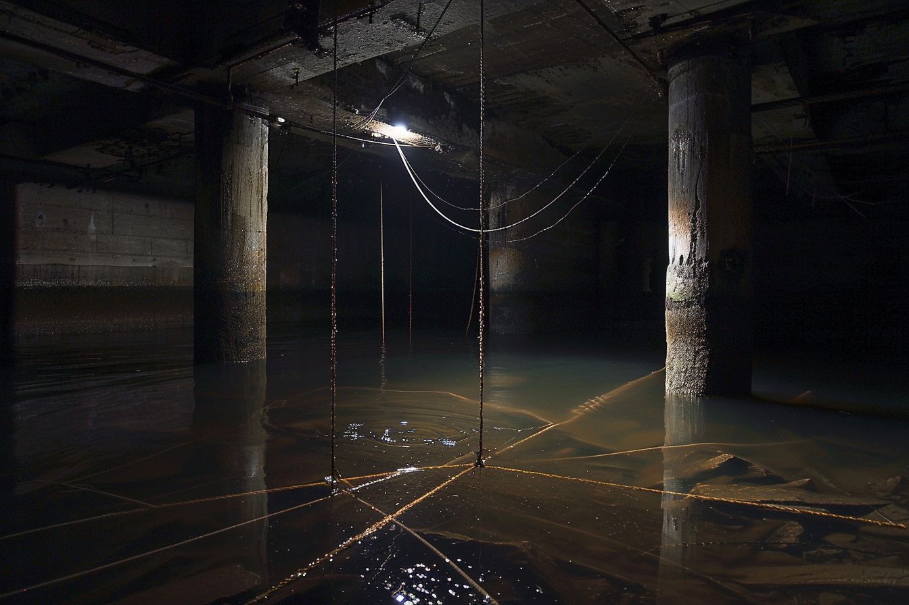
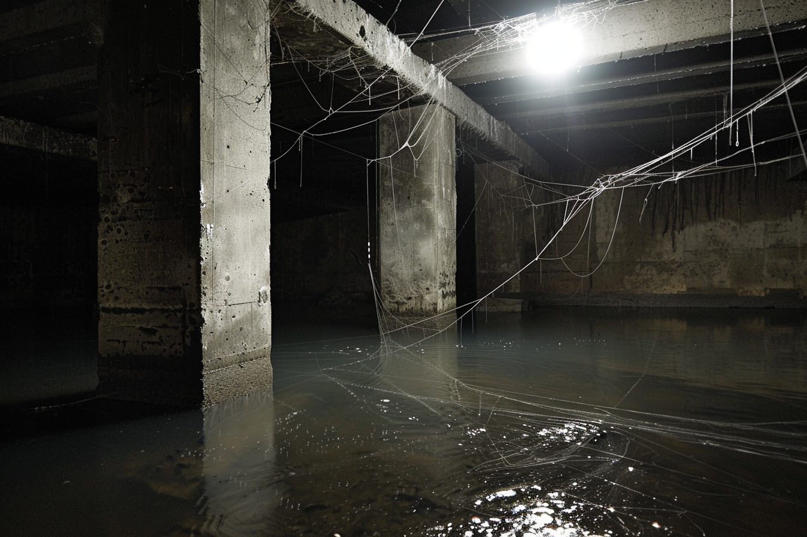
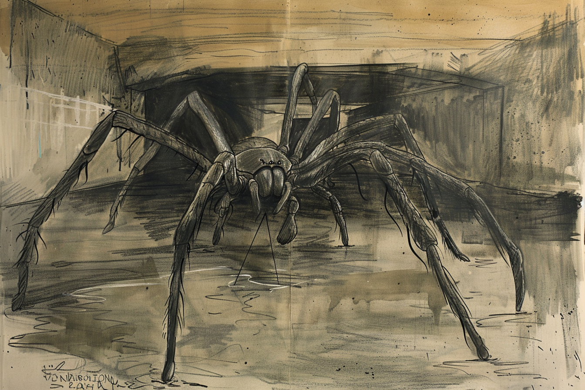
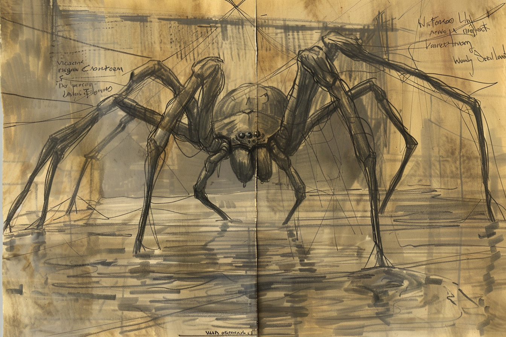
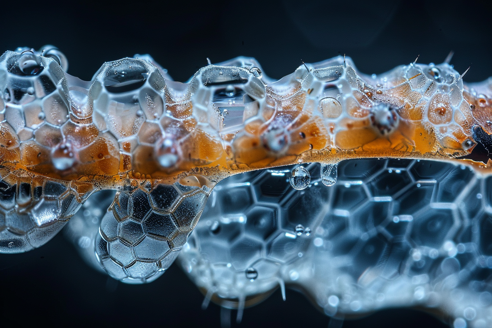

Arácnido de gran porte con ocho extremidades largas y delgadas, translúcidas en las articulaciones distales. Las articulaciones producen un clic húmedo audible durante el desplazamiento — probablemente cavitación en fluido articular presurizado. El abdomen es semitransparente: a contraluz es posible distinguir el saco de ácido digestivo interno, una masa de coloración verdosa que pulsa con el ritmo metabólico del animal. Este rasgo ha sido utilizado por supervivientes como indicador de presencia en espacios con poca luz.
Los ojos son ocho, distribuidos en arco frontal. La respuesta a la luz intensa es de retracción — documentada en múltiples observaciones — lo que sugiere fotosensibilidad elevada, posiblemente dolorosa.
No produce veneno. La inmovilización de la presa se logra por aplastamiento con las extremidades anteriores, seguido de aplicación directa del ácido digestivo externo. El proceso es rápido en presas del tamaño de un humano adulto.
La Araña Hidráulica construye redes horizontales invisibles entre columnas o paredes a ras de la superficie del agua, en profundidades de 5 a 20 cm. Los hilos son translúcidos y prácticamente indetectables en agua turbia o con poca luz. Cuando la presa pisa el hilo de activación, el animal emerge desde abajo a velocidad que los observadores describen consistentemente como "anormal" — estimada en más de 4 m/s en espacio confinado.
La especie ha aprendido a utilizar el sistema de drenaje urbano como red de desplazamiento — individuos documentados entran por una rejilla y emergen veinticinco metros más adelante en tiempo imposible en superficie. Este comportamiento implica conocimiento activo de la red subterránea o capacidad de orientación bajo tierra.
El sistema sensorial primario es vibración en agua. El movimiento de la presa en la lámina de agua activa la respuesta de caza. La fotosensibilidad extrema puede ser explotada como medida defensiva: una fuente de luz intensa dirigida al animal produce retracción inmediata y pausa de varios minutos antes de retomar actividad.
El primer contacto documentado es indirecto: F-02 escuchó el clic articular en el pasillo del fondo de una farmacia y salió sin investigar. La decisión de no entrar al pasillo fue correcta — la probabilidad de supervivencia de encuentro directo en espacio confinado sin armamento de distancia es estimada por el archivo como inferior al 20%.
La regla operativa "no caminar en agua estancada nunca, por ninguna razón" fue establecida por F-02 tras la primera observación directa y ha sido adoptada como protocolo estándar del archivo.




